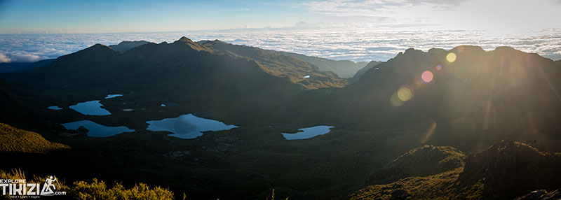

AEl experto que valida tu plan
Editorial, cálida, serif. Apuesta por el cliente que el negocio ya cobra hoy: el viajero independiente que armó su itinerario y quiere que un local lo revise.
- Jerarquía
- Problema → proceso de 5 pasos → servicios → Rodrigo → prueba social
- Riesgo
- Nicho estrecho; deja fuera a quien quiere delegar todo
- Depende de
- Que la consulta de $100 sea la fuente de ingreso #1